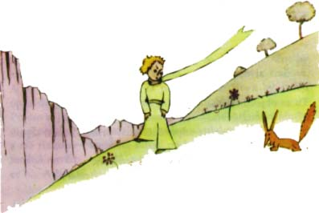
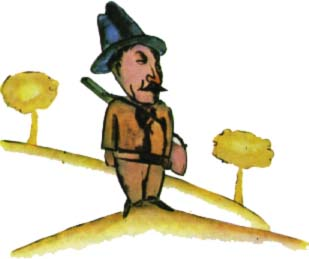
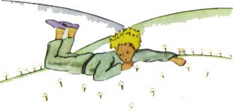
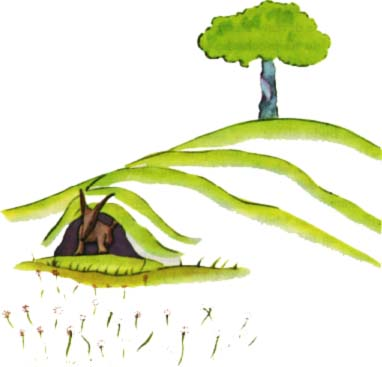

Chvíli pøemý¹lel a pak dodal:
"Co to znamená ochoèit?"
"Ty nejsi zdej¹í," øekla li¹ka, "co tu hledá¹?"
"Hledám lidi," odvìtil malý princ. "Co to znamená ochoèit?"
"Lidé," øekla li¹ka, "mají pu¹ky a loví zvíøata. To je hroznì nepøíjemné. Pìstují také slepice. Je to jejich jediný zájem. Hledá¹ slepice?"
"Ne," øekl malý princ. "Hledám pøátele. Co to znamená ochoèit?"
"Je to nìco, na co se moc zapomíná," odpovìdìla li¹ka.
"Znamená to vytvoøit pouta..."
"Vytvoøit pouta?"
"Ov¹em," øekla li¹ka. "Ty jsi pro mne jen malým chlapcem podobným statisícùm malých chlapcù. Nepotøebuji tì a ty mì také nepotøebuje¹. Jsem pro tebe jen li¹kou podobnou statisícùm li¹ek. Ale kdy¾ si mì ochoèí¹, budeme potøebovat jeden druhého. Bude¹ pro mne jediným na svìtì a já zase pro tebe jedinou na svìtì..."
"Zaèínám chápat," øekl malý princ. "Znám jednu kvìtinu ... myslím, ¾e si mì ochoèila..."
"To je mo¾né," dodala li¹ka. "Na Zemi je vidìt v¹elicos..."
"Ó, to není na Zemi," øekl malý princ.
Zdálo se, ¾e to probudilo v li¹ce velkou zvìdavost:
"Na jiné planetì?"
"Ano."
"Jsou na té planetì lovci?"
"Nejsou."
"Ach, to je zajímavé! A slepice?"
"Také ne."
"Nic není dokonalé," povzdychla si li¹ka.

Ale vrátila se ke svému nápadu:
"Mùj ¾ivot je jednotvárný. Honím slepice a lidé honí mne. V¹echny slepice jsou si navzájem podobné a také lidé jsou si podobní. Trochu se proto nudím. Ale kdy¾ si mì ochoèí¹, bude mùj ¾ivot jakoby prozáøen sluncem. Poznám zvuk krokù, který bude jiný ne¾ v¹echny ostatní. Ostatní kroky mì zahánìjí pod zem. Ale tvùj krok mì jako hudba vyláká z doupìte. A pak, podívej se! Vidí¹ tamhleta obilná pole? Nejím chléb. Obilí je pro mne zbyteèné. Obilná pole mi nic nepøipomínají. A to je smutné. Ale ty má¹ zlaté vlasy. Bude to opravdu nádherné, a¾ si mì ochoèí¹. Zlaté obilí mi tì bude pøipomínat. A já budu milovat ¹umìní vìtru v obilí..."
Li¹ka umlkla a dlouho se dívala na malého prince.
"Ochoè si mì, prosím!" øekla.
"Velmi rád," odvìtil malý princ, "ale nemám moc èasu. Musím objevit pøátele a poznat spoustu vìcí."
"Známe jen ty vìci, které si ochoèíme," øekla li¹ka. Lidé u¾ nemají èas, aby nìco poznávali. Kupují u obchodníku vìci úplnì hotové. Ale ponìvad¾ pøátelé nejsou na prodej, nemají pøátel. Chce¹-li pøítele, ochoè si mì!"
"Co mám dìlat?" zeptal se malý princ.
"Musí¹ být hodnì trpìlivý," odpovìdìla li¹ka. "Sedne¹ si nejprve kousek ode mne, takhle do trávy. Já se budu na tebe po oèku dívat, ale ty nebude¹ nic øíkat. Øeè je pramenem nedorozumìní. Ka¾dý den si v¹ak bude¹ moci sednout trochu blí¾..."

Druhý den pøi¹el malý princ zas.
"Bylo by lépe, kdybys pøicházel v¾dycky ve stejnou hodinu," øekla li¹ka. "Pøijde¹-li napøíklad ve ètyøi hodiny odpoledne, ji¾ od tøí hodin budu ¹»astná. Èím více èas pokroèí, tím budu ¹»astnìj¹í. Ve ètyøi hodiny budu u¾ rozechvìlá a neklidná; objevím cenu ¹tìstí! Ale bude¹-li pøicházet v rùznou dobu, nebudu nikdy vìdìt, v kterou hodinu vyzdobit své srdce... Je tøeba zachovávat øád."
"Co to je øád?" øekl malý princ.
"To je také nìco moc zapomenutého," odpovìdìla li¹ka, "to, co odli¹uje jeden den od druhého, jednu hodinu od druhé. Moji lovci napøíklad zachovávají také øád. Tanèí ka¾dý ètvrtek s dìvèaty z vesnice. Ka¾dý ètvrtek je tedy nádherný den! Jdu na procházku a¾ do vinice. Kdyby lovci tanèili kdykoliv, v¹echny dny by se podobaly jeden druhému a nemìla bych vùbec prázdniny."
Tak si malý princ ochoèil li¹ku. A tu se pøiblí¾ila hodina odchodu.
"Ach budu plakat," øekla li¹ka.
"To je tvá vina," øekl malý princ. "Nepøál jsem ti nic zlého, ale tys chtìla, abych si tì ochoèil..."
"Ov¹em," øekla li¹ka.
"Ale bude¹ plakat!" namítl malý princ.
"Budu plakat," øekla li¹ka.
"Tak tím nic nezíská¹!"
"Získám, vzpomeò si na tu barvu obilí."
A potom dodala: "Jdi se podívat je¹tì jednou na rù¾e. Pochopí¹, ¾e ta tvá je jediná na svìtì. Pøijde¹ mi dát sbohem a já ti dám dárek - tajemství."
Malý princ odbìhl podívat se znovu na rù¾e.
"Vy se mé rù¾i nepodobáte, vy je¹tì nic nejste," øekl jim. "Nikdo si vás neochoèil a vy jste si taky nikoho neochoèily. Jste takové, jaká byla má li¹ka. Byla to jen li¹ka podobná statisícùm jiných li¹ek. Ale stala se z ní má pøítelkynì a teï je pro mne jediná na svìtì."
A rù¾e byly celé zara¾ené.
"Jste krásné, ale jste prázdné," pokraèoval. "Není mo¾né pro vás umøít. Pravda, o mé rù¾i by si obyèejný chodec myslel, ¾e se vám podobá. Ale ona jediná je dùle¾itìj¹í ne¾ vy v¹echny, proto¾e právì ji jsem zaléval. Proto¾e ji jsem dával pod poklop. Proto¾e ji jsem chránil zástìnou. Proto¾e jí jsem pozabíjel housenky (kromì dvou nebo tøí, z kterých budou motýli). Proto¾e právì ji jsem poslouchal, jak naøíkala nebo se chlubila, nebo dokonce nìkdy mlèela. Proto¾e je to má rù¾e."

A vrátil se k li¹ce.
"Sbohem...," øekl.
"Sbohem," øekla li¹ka. "Tady je to mé tajemství, úplnì prostinké: správnì vidíme jen srdcem. Co je dùle¾ité, je oèím neviditelné."
"Co je dùle¾ité, je oèím neviditelné," opakoval malý princ, aby si to zapamatoval.
"A pro ten èas, který jsi své rù¾i vìnoval, je ta tvá rù¾e tak dùle¾itá."
"A pro ten èas, který jsem své rù¾i vìnoval...," øekl malý princ, aby si to zapamatoval.
"Lidé zapomnìli na tuto pravdu," øekla li¹ka. "Ale ty na ni nesmí¹ zapomenout. Stává¹ se nav¾dy zodpovìdným za to, cos k sobì pøipoutal. Jsi zodpovìdný za svou rù¾i..."
Jsem zodpovìdný za svou rù¾i...," opakoval malý princ, aby si to zapamatoval.